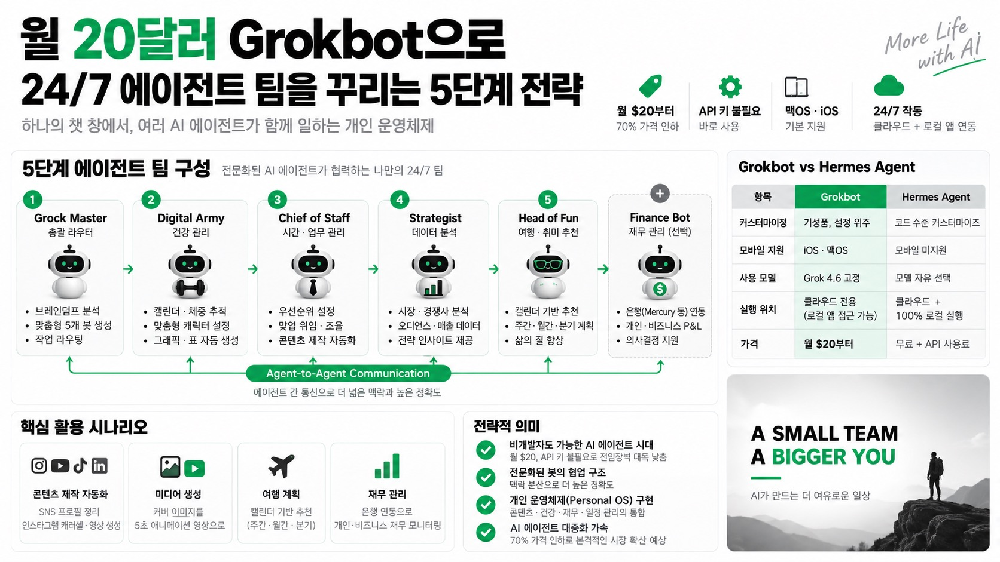

Jack RobertsMORNING DIGEST · 2026-09-05 · Jack Roberts🎬 영상
월 20달러 Grokbot으로 24/7 에이전트 팀을 꾸리는 5단계 전략
Jack Roberts가 소개하는 Grok 4.6 기반 개인 AI 에이전트 "Grokbot" 구축법, 가격 70% 인하로 진입장벽이 크게 낮아졌다.

01핵심 개요
Grok 4.6 기반 Grokbot이 이번 주 가격 70% 인하, 월 $20부터 시작 가능.
API 키 설정 없이 맥OS·iOS에서 바로 사용, 클라우드와 로컬 양쪽에서 24시간 작동.
봇 간 "에이전트 대 에이전트" 통신이 핵심 기능, 하나의 챗 창에서 위임·조율 완결.
5단계 봇 구성(Grock Master, Digital Army, Chief of Staff, Strategist, Head of Fun) + 보너스 Finance Bot 제안.
Appify(데이터 스크래핑)·TopView(이미지·영상 생성) 등 외부 도구를 MCP로 연동해 실전 워크플로우 시연.
02핵심 주장 / 논점 구조
진행자는 Grokbot의 강점을 "초보자 친화성"과 "봇 간 통신"으로 규정하며, 이 두 가지가 기존 API 기반 에이전트 구축 방식 대비 진입장벽을 크게 낮췄다고 주장.
역할을 지나치게 세분화하기보다 5~7개 핵심 카테고리로 압축하고, 그 안에서 세부 미니 에이전트를 두는 방식이 성능과 관리 효율 면에서 낫다고 권장.
단일 총괄 봇(Chief of Staff)이 모든 것을 직접 처리하지 않고 전문화된 봇에 위임하는 구조가, AI가 "맥락 부족으로 코너를 돌아 생각하지 못하는" 문제를 해결한다고 강조.
Grockbot과 Hermes Agent를 대비시켜, "그대로 쓰는 관리형 서비스"와 "완전 커스터마이즈 가능한 오픈 시스템"이라는 두 가지 철학 차이를 명확히 구분.
035단계 봇 구성 상세
1단계 Grock Master: 최초 설정 시 사용자의 브레인덤프(음성 입력 또는 Claude/ChatGPT로 정리한 맥락)를 받아 필요한 5개 봇을 자동 추천·생성하는 총괄 라우터. 문제를 직접 풀지 않고 어느 봇이 담당할지 결정하는 역할.
2단계 Digital Army(건강봇): 캘린더·체중 데이터를 자동으로 확인하며, 사용자가 원하는 캐릭터(예: 아놀드 슈워제네거 이미지의 "아니")로 커스터마이징 가능. 체중 트래커, 그래픽·표 자산을 자동 생성.
3단계 Chief of Staff: "지금 내 시간을 어디에 써야 하는가"라는 질문에 답하는 역할로, 주당 3시간 이상 절약 효과를 주장. Appify로 SNS 통계 수집, TopView로 인스타그램 캐러셀·영상 생성까지 위임 처리.
4단계 Strategist: 분석·경쟁사 동향·오디언스·매출 데이터를 담당하는 데이터 전문 봇. Chief of Staff에 통합하거나 별도 분리 가능.
5단계 Head of Fun + 보너스 Finance Bot: 캘린더 기반으로 여행지·취미를 추천(매주 소소한 것, 매월 큰 것, 분기 특별한 것 계획), Finance Bot은 Mercury 등 은행 연동으로 개인·비즈니스 P&L을 관리하며 Chief of Staff와 대화해 의사결정을 지원.
04전략적 의미
에이전트 간 통신 구조는 "한 봇이 모든 맥락을 알아야 한다"는 기존 AI 비서의 한계를 우회하는 설계로, 전문화된 봇에 맥락을 분산시켜 정확도를 높이는 접근이다.
월 $20라는 가격과 API 키 불필요라는 조건은 비개발자 개인 사용자층까지 에이전틱 워크플로우를 확산시킬 잠재력을 시사한다.
콘텐츠 제작(인스타그램 캐러셀·영상), 건강 관리, 재무 관리, 일정 관리를 하나의 생태계에서 연결함으로써 "개인 운영체제(personal OS)"형 AI 활용 트렌드를 대표하는 사례로 볼 수 있다.
05Grockbot vs Hermes Agent 비교표
항목
Grockbot
Hermes Agent
커스터마이징
기성품(off-the-shelf), 설정 위주
코드 수준 완전 커스터마이즈
모바일 지원
iOS·맥OS 기본 지원
모바일 미지원
사용 모델
Grok 4.6 고정
모델 자유 선택
실행 위치
클라우드 전용(단, 로그인된 로컬 앱 접근 가능)
클라우드 + 100% 로컬 실행 가능
가격
월 $20부터
무료 + API 사용료
06활용 시나리오
브레인덤프(음성 메모 또는 Claude/ChatGPT 요약)를 Grock Master에 전달해 자신에게 맞는 5개 전문 봇을 자동 생성.
Chief of Staff에게 "인스타그램·유튜브·틱톡·링크드인 프로필 정리 + TopView로 캐러셀 이미지 제작"을 한 번에 지시해 SNS 콘텐츠 제작 자동화.
팟캐스트 커버 이미지를 업로드하고 "5초짜리 배경 애니메이션 영상으로 변환"을 요청해 TopView 연동으로 영상 자산 생성.
여행 3주 전 "부다페스트에서 할 만한 것" 추천을 Head of Fun에 요청하면 캘린더 맥락을 반영해 자동 조사·일정 반영.
Finance Bot에 은행(Mercury 등) 연동을 요청해 개인·비즈니스 재무 현황을 상시 모니터링하고 Chief of Staff를 통해 의사결정에 반영.
07현황 및 전망
이번 주 70% 가격 인하는 Grok 계열 에이전트 서비스의 대중화 전략으로 해석되며, 유사 개인 AI 에이전트 서비스 간 가격 경쟁이 가속화될 가능성을 시사한다.
진행자는 영상 말미에 별도의 "이번 달 발견한 가장 강력한 AI 에이전트 기법"을 예고하며, 메모리 시스템·에이전틱 운영체제 구축을 다루는 별도 클로드 코드 마스터클래스를 안내(구체 내용은 자막에 명시되지 않음).
다중 에이전트 간 우선순위 충돌(예: "Fun 에이전트와 Finance 에이전트가 부딪힐 수 있다"는 진행자의 언급) 같은 실사용 이슈가 향후 예산 통제형 워크플로우 설계의 과제로 남아있다.
08용어 사전
Grokbot: xAI의 Grok 4.6 모델 기반으로 동작하는 개인용 멀티 에이전트 플랫폼, API 키 없이 맥OS·iOS에서 사용.
에이전트 간 통신(agent-to-agent): 여러 봇이 서로 메시지를 주고받으며 업무를 위임·조율하는 구조.
Chief of Staff: 사용자의 시간·우선순위를 관리하고 다른 전문 봇에 작업을 분배하는 총괄 비서 역할의 봇.
MCP(Model Context Protocol): 외부 도구(TopView 등)를 에이전트에 연결해 이미지·영상 생성 같은 기능을 호출할 수 있게 하는 연동 프로토콜.
Hermes Agent: Grockbot과 비교 대상으로 언급된, 완전 커스터마이즈 가능하고 로컬 실행도 지원하는 대안 에이전트 프레임워크.
TopView / Appify: TopView는 에이전틱 이미지·영상 생성 도구, Appify는 SNS 등 웹 데이터 스크래핑 도구로 Grockbot에 연동되어 사용됨.